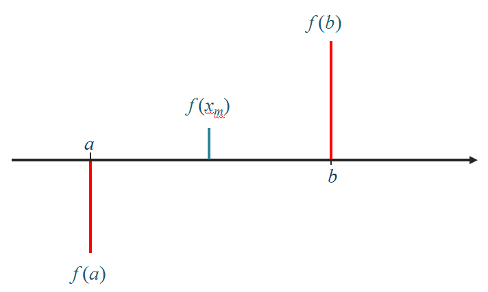
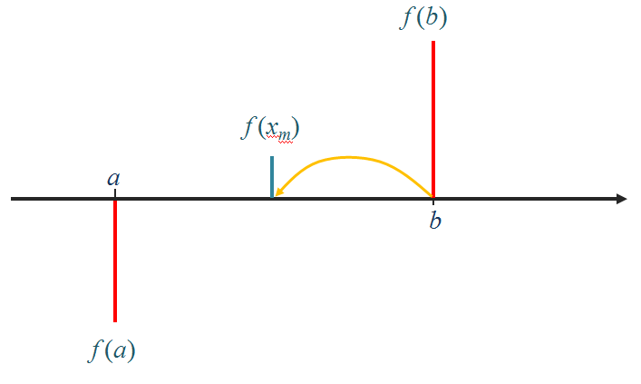
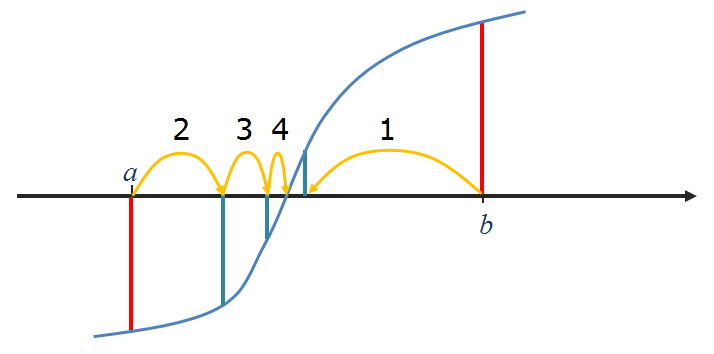
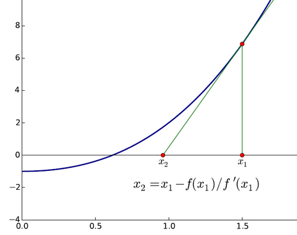

16. Algoritmos numéricos#
16.1. Introdução (algoritmo babilónico)#
Um algoritmo é um procedimento, indicado passo a passo, destinado a resolver um problema num intervalo de tempo finito.
Algoritmo para calcular raízes quadradas
Para calcular a raíz quadrada de um número a:
Fazer \(x = 1\)
Fazer \(x = \frac{1}{2} \left( x + a/x \right)\)
Repetir 20 vezes o passo 2
\(x\) é a raíz quadrada de \(a\).
a = 2.0
print('a =', a)
x = 1.0
for i in range(20):
novo = 0.5 * (x + a/x)
x = novo
print('x =', x)
a = 2.0
x = 1.414213562373095
a = 2.0
x = 1.0
for i in range(20):
print(x)
novo = 0.5 * (x + a/x)
x = novo
print(f"A raíz quadrada de {a} é {x}")
1.0
1.5
1.4166666666666665
1.4142156862745097
1.4142135623746899
1.414213562373095
1.414213562373095
1.414213562373095
1.414213562373095
1.414213562373095
1.414213562373095
1.414213562373095
1.414213562373095
1.414213562373095
1.414213562373095
1.414213562373095
1.414213562373095
1.414213562373095
1.414213562373095
1.414213562373095
A raíz quadrada de 2.0 é 1.414213562373095
Algoritmo para calcular raízes quadradas
Para calcular a raíz quadrada de um número a:
Fazer \(x_0 = 1\)
Fazer \(x_{i+1} = \frac{1}{2} \left( x_i + a/x_i \right)\)
Repetir o passo 2 até \(|x_{i+1} - x_i| < 10^{-10}\)
x é a raíz quadrada de a.
a = 2.0
x = 1.0
for i in range(100):
print(x)
novo = 0.5 * (x + a/x)
if abs(novo - x) < 1e-10:
x = novo
break
x = novo
print(f"A raíz quadrada de {a} é {x}")
1.0
1.5
1.4166666666666665
1.4142156862745097
1.4142135623746899
A raíz quadrada de 2.0 é 1.414213562373095
def babilonico(a, show_iters=False):
x = 1.0
for i in range(100):
if show_iters:
print(x)
novo = 0.5 * (x + a/x)
if abs(novo - x) < 1e-10:
return novo
x = novo
return x
r = babilonico(2.0, show_iters=True)
print(f"A raíz quadrada de 2.0 é {r}")
1.0
1.5
1.4166666666666665
1.4142156862745097
1.4142135623746899
A raíz quadrada de 2.0 é 1.414213562373095
16.2. Bisseções sucessivas#
Objetivo: calcular a raíz de uma função



Para calcular a raíz de uma função \(f(x)\), contínua sabendo que existe uma raíz no intervalo \(]a, b[\):
Calcular o ponto médio \(x_m = (a+b) / 2\) e o valôr da função \(f(x_m)\)
Se o sinal de \(f(x_m)\) for igual ao sinal de \(f(a)\) então fazer \(a\) = \(x_m\). Se o sinal de \(f(x_m)\) for igual ao sinal de \(f(b)\) então fazer \(b\) = \(x_m\)
Repetir o passo 2 até à “convergência”:
Quando \(|b-a| < \epsilon\) (um numero pequeno), o processo deve parar ou
Quando \(f(x_m) < \epsilon_2\) (um numero pequeno), o processo deve parar
\(x_m\) é a raíz da função \(f(x)\), isto é \(f(x_m) \approx 0\).
def bissect(f, a, b):
epsilon = 1e-6
fa, fb = f(a), f(b)
while abs(b-a) > epsilon:
xm = (a+b)/2.0
fm = f(xm)
if fm*fa > 0.0:
a,fa = xm,fm
else:
b,fb = xm,fm
return a
def f(x):
return x**3 -2
x = bissect(f, 1, 2)
print(f"Raíz encontrada:\n{x}")
Raíz encontrada:
1.2599201202392578
def bissect(f, a, b):
epsilon, epsilonf = 1e-6, 1e-10
fa, fb = f(a), f(b)
while abs(b-a) > epsilon:
xm = (a+b)/2.0
fm = f(xm)
if abs(fm) < epsilonf:
return xm, fm
if fm*fa > 0.0:
a,fa = xm,fm
else:
b,fb = xm,fm
return a, f(a)
def f(x):
return x**3 -2
x, fx = bissect(f, 1, 2)
print(f"x = {x}, f(x) = {fx:9.7f}")
x = 1.2599201202392578, f(x) = -0.0000044
Monitorizando as bisseções:
def bissect(f, a, b):
epsilon, epsilonf = 1e-6, 1e-10
fa, fb = f(a), f(b)
history = [] # Uma lista de listas com a "história" das iterações
while abs(b-a) > epsilon:
xm = (a+b)/2.0
fm = f(xm)
history.append([a,b,fm])
if abs(fm) < epsilonf:
return xm, fm, history
if fm*fa > 0.0:
a,fa = xm,fm
else:
b,fb = xm,fm
return a, f(a), history
def f(x):
return x**3 -2
x, fx, h = bissect(f, 1, 2)
print(f"x = {x}, f(x) = {fx:9.7f}")
print('''
Bisseções:
a b |b-a| f(xm)''')
for a, b, fm in h:
print(f"{a:7.5f} {b:7.5f} {abs(b-a):10.7f} {fm: 10.8f}")
x = 1.2599201202392578, f(x) = -0.0000044
Bisseções:
a b |b-a| f(xm)
1.00000 2.00000 1.0000000 1.37500000
1.00000 1.50000 0.5000000 -0.04687500
1.25000 1.50000 0.2500000 0.59960938
1.25000 1.37500 0.1250000 0.26098633
1.25000 1.31250 0.0625000 0.10330200
1.25000 1.28125 0.0312500 0.02728653
1.25000 1.26562 0.0156250 -0.01002455
1.25781 1.26562 0.0078125 0.00857323
1.25781 1.26172 0.0039062 -0.00074007
1.25977 1.26172 0.0019531 0.00391297
1.25977 1.26074 0.0009766 0.00158555
1.25977 1.26025 0.0004883 0.00042251
1.25977 1.26001 0.0002441 -0.00015884
1.25989 1.26001 0.0001221 0.00013182
1.25989 1.25995 0.0000610 -0.00001351
1.25992 1.25995 0.0000305 0.00005916
1.25992 1.25993 0.0000153 0.00002282
1.25992 1.25993 0.0000076 0.00000466
1.25992 1.25992 0.0000038 -0.00000443
1.25992 1.25992 0.0000019 0.00000011
16.2.1. Método de newton#

Para calcular a raíz de uma função \(f(x)\), conhecendo também a sua derivada \(f'(x)\):
Partir de uma estimativa inicial \(x_0\)
Fazer \(x_{i+1} = x_i - f(x_i)/f'(x_i)\)
Repetir o passo 2 até \(|f(x_i)| < \epsilon\) (um numero pequeno)
\(x_{final}\) é a raíz da função \(f(x)\), isto é \(f(x_{final}) \approx 0\).
NOTA: O algoritmo babilónico é um caso particular do método de Newton para \(f(x) = x^2 -a\)
def newton(f, df, x):
epsilon = 1e-6
fx, dfx = f(x), df(x)
while abs(fx) > epsilon:
x = x - fx / dfx
fx, dfx = f(x),df(x)
return (x, fx)
Monitorizando as iterações:
def newton(f, df, x):
epsilon = 1e-6
history = []
fx,dfx = f(x),df(x)
while abs(fx) > epsilon:
history.append([x,fx])
x = x - fx / dfx
fx, dfx = f(x),df(x)
return (x, fx, history)
def f(x):
return x**3 -2
def df(x):
return 3 * x**2
x, fx, h = newton(f, df, 1.5)
print(f"x = {x}, f(x) = {fx:9.7f}")
print('''
Iterações:
x f(x)''')
for x, fx in h:
print(f"{x:9.7f} {fx:9.7f}")
x = 1.2599210498953948, f(x) = 0.0000000
Iterações:
x f(x)
1.5000000 1.3750000
1.2962963 0.1782757
1.2609322 0.0048193
1.2599219 0.0000039
Compare-se a rapidez da convergência dos 2 métodos,
para \(\epsilon = 10^{-6}\)
Método das bisseções sucessivas:
Bisseções:
a b |b-a| f(xm)
1.00000 2.00000 1.00000000 1.3750000
1.00000 1.50000 0.50000000 -0.0468750
1.25000 1.50000 0.25000000 0.5996094
1.25000 1.37500 0.12500000 0.2609863
1.25000 1.31250 0.06250000 0.1033020
1.25000 1.28125 0.03125000 0.0272865
1.25000 1.26562 0.01562500 -0.0100245
1.25781 1.26562 0.00781250 0.0085732
1.25781 1.26172 0.00390625 -0.0007401
1.25977 1.26172 0.00195312 0.0039130
1.25977 1.26074 0.00097656 0.0015855
1.25977 1.26025 0.00048828 0.0004225
1.25977 1.26001 0.00024414 -0.0001588
1.25989 1.26001 0.00012207 0.0001318
1.25989 1.25995 0.00006104 -0.0000135
1.25992 1.25995 0.00003052 0.0000592
1.25992 1.25993 0.00001526 0.0000228
1.25992 1.25993 0.00000763 0.0000047
1.25992 1.25992 0.00000381 -0.0000044
1.25992 1.25992 0.00000191 0.0000001
Método de Newton:
Iterações:
x f(x)
1.5000000 1.3750000
1.2962963 0.1782757
1.2609322 0.0048193
1.2599219 0.0000039
Método de Newton com a função \(sin(x)\)
from math import sin, cos, pi
def f(x):
return sin(x)
def df(x):
return cos(x)
def newton(f, df, x):
epsilon = 1e-6
history = []
fx,dfx = f(x),df(x)
while abs(fx) > epsilon:
history.append([x,fx])
x = x - fx / dfx
fx, dfx = f(x),df(x)
return (x, fx, history)
for x0 in 0.1, 1.1, 3.1, 4.1, 5.1, 6.1, 12.1:
x, fx, h = newton(f, df, x0)
pi_x = x / pi
print(f"x0 = {x0:<7.2f} x = {pi_x:4.1f} pi")
x0 = 0.10 x = 0.0 pi
x0 = 1.10 x = 0.0 pi
x0 = 3.10 x = 1.0 pi
x0 = 4.10 x = 1.0 pi
x0 = 5.10 x = 58.0 pi
x0 = 6.10 x = 2.0 pi
x0 = 12.10 x = 4.0 pi
def f(x):
return sin(x)
def df(x):
return cos(x)
def newton(f, df, x):
epsilon = 1e-6
history = []
fx,dfx = f(x),df(x)
while abs(fx) > epsilon:
history.append([x,fx])
x = x - fx / dfx
fx, dfx = f(x),df(x)
return (x, fx, history)
for x0 in 0.1, 1.1, 3.1, 4.1, 5.1, 6.1, 12.1:
print('----------------\nx0 = {}'.format(x0))
x, fx, h = newton(f, df, x0)
for x,fx in h:
print('x = {:8.5f}, f(x)={:8.5f}'.format(x,fx))
pi_x = x / pi
print(f"para x0 = {x0}, x = {pi_x:4.1f} pi")
----------------
x0 = 0.1
x = 0.10000, f(x)= 0.09983
x = -0.00033, f(x)=-0.00033
para x0 = 0.1, x = -0.0 pi
----------------
x0 = 1.1
x = 1.10000, f(x)= 0.89121
x = -0.86476, f(x)=-0.76094
x = 0.30804, f(x)= 0.30319
x = -0.01013, f(x)=-0.01013
para x0 = 1.1, x = -0.0 pi
----------------
x0 = 3.1
x = 3.10000, f(x)= 0.04158
x = 3.14162, f(x)=-0.00002
para x0 = 3.1, x = 1.0 pi
----------------
x0 = 4.1
x = 4.10000, f(x)=-0.81828
x = 2.67647, f(x)= 0.44853
x = 3.17831, f(x)=-0.03671
x = 3.14158, f(x)= 0.00002
para x0 = 4.1, x = 1.0 pi
----------------
x0 = 5.1
x = 5.10000, f(x)=-0.92581
x = 7.54939, f(x)= 0.95397
x = 4.36848, f(x)=-0.94144
x = 1.57632, f(x)= 0.99998
x = 182.69881, f(x)= 0.46748
x = 182.16999, f(x)=-0.04237
x = 182.21240, f(x)= 0.00003
para x0 = 5.1, x = 58.0 pi
----------------
x0 = 6.1
x = 6.10000, f(x)=-0.18216
x = 6.28526, f(x)= 0.00208
para x0 = 6.1, x = 2.0 pi
----------------
x0 = 12.1
x = 12.10000, f(x)=-0.44965
x = 12.60341, f(x)= 0.03703
x = 12.56635, f(x)=-0.00002
para x0 = 12.1, x = 4.0 pi
%matplotlib inline
from matplotlib import pyplot as pl
import matplotlib as mpl
from numpy import linspace, sin, cos
x = linspace(-6, 10, 1000)
y = sin(x)
pl.axhline(color='black', linewidth=3)
pl.plot(x,y, color='teal', linewidth=3)
for z in range(-1, 4):
pl.axvline(x = z * pi, color='black', linestyle=':', ymin=0.25, ymax=0.75)
pl.show()
mpl.rcParams['figure.figsize'] = (10,6)
def f(x):
return sin(x)
def df(x):
return cos(x)
def newton_points(h):
# h = [(x0, fx0), (x1, fx1), ...]
xvalues = []
yvalues = []
for x, y in h:
xvalues.extend([x,x])
yvalues.extend([0,y])
return xvalues,yvalues
x = linspace(-1, 4, 1000)
y = sin(x)
pl.axhline(color='darkred')
pl.plot(x,y, color='black', linewidth=2)
for x0, color in [(0.5,'green'), (1.1, 'darkred'), (2.2, 'teal')]:
x, fx, h = newton(f, df, x0)
print(f'Para x0 = {x0}, raíz = {x:6.3f}')
xpoints, ypoints = newton_points(h)
pl.plot(xpoints, ypoints, color=color, linewidth=2)
pl.show()
Para x0 = 0.5, raíz = -0.000
Para x0 = 1.1, raíz = 0.000
Para x0 = 2.2, raíz = 3.142
def f(x):
return sin(x)
def df(x):
return cos(x)
x = linspace(-1, 10, 1000)
y = sin(x)
pl.axhline(color='darkred')
pl.plot(x,y, color='black', linewidth=2)
for x0, color in [(5.1,'green')]:
x, fx, h = newton(f, df, x0)
print(f'Para x0 = {x0}, raíz = {x:6.3f}')
xpoints, ypoints = newton_points(h)
pl.plot(xpoints, ypoints, color=color, linewidth=2)
pl.xlim(-1,10)
pl.show()
Para x0 = 5.1, raíz = 182.212
def f(x):
return sin(x)
def df(x):
return cos(x)
x = linspace(180, 185, 1000)
y = sin(x)
pl.axhline(color='darkred')
pl.plot(x,y, color='black', linewidth=2)
for x0, color in [(5.1,'green')]:
x, fx, h = newton(f, df, x0)
print(f'Para x0 = {x0}, raíz = {x:6.3f}')
xpoints, ypoints = newton_points(h)
pl.plot(xpoints, ypoints, color=color, linewidth=2)
pl.xlim(180,185)
pl.show()
Para x0 = 5.1, raíz = 182.212
def plot_newton(x0):
def f(x):
return sin(x)
def df(x):
return cos(x)
x = linspace(-1, 10, 1000)
y = sin(x)
pl.axhline(color='darkred')
pl.plot(x,y, color='black', linewidth=2)
color = 'green'
x, fx, h = newton(f, df, x0)
x_pi = x / pi
xpoints, ypoints = newton_points(h)
pl.plot(xpoints, ypoints, color=color, linewidth=2)
pl.xlim(-1,10)
pl.grid()
#pl.show()
#print(f'Para x0 = {x0}, raíz = {x_pi:4.2f} pi')